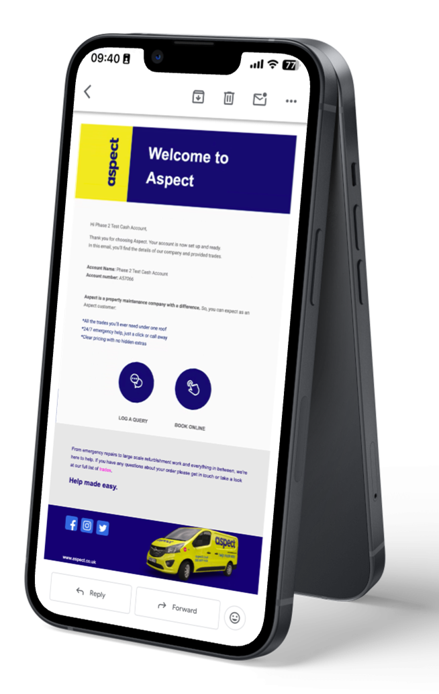
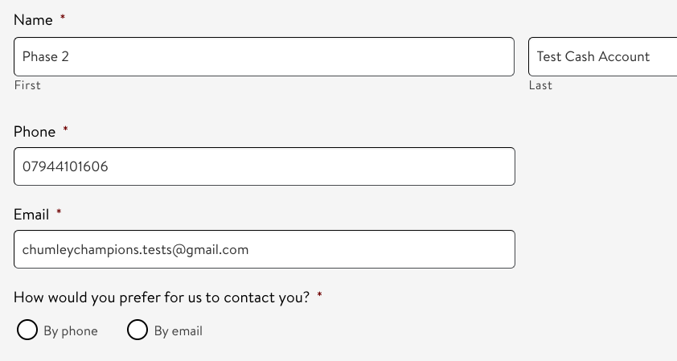
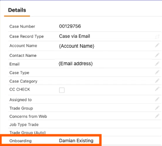
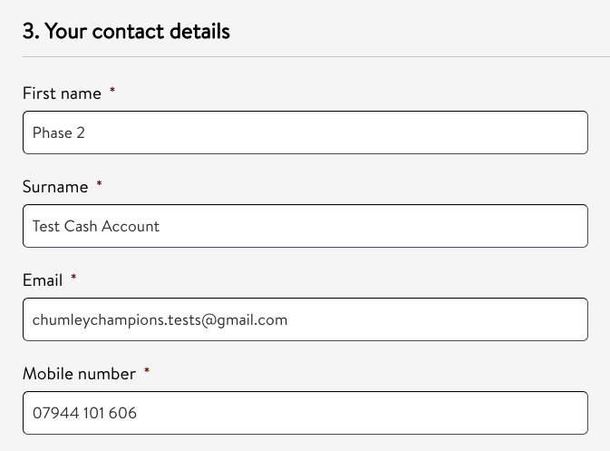
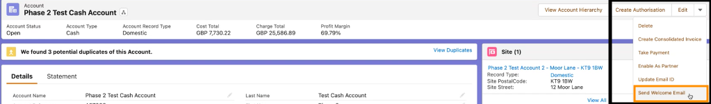
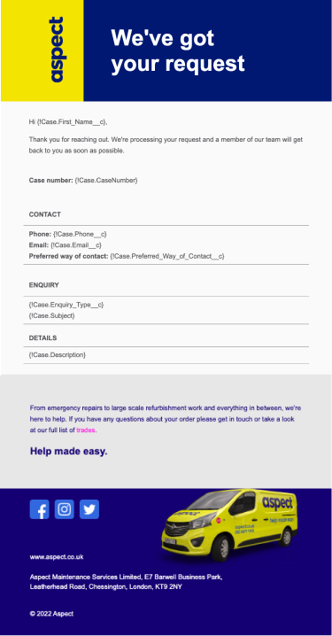
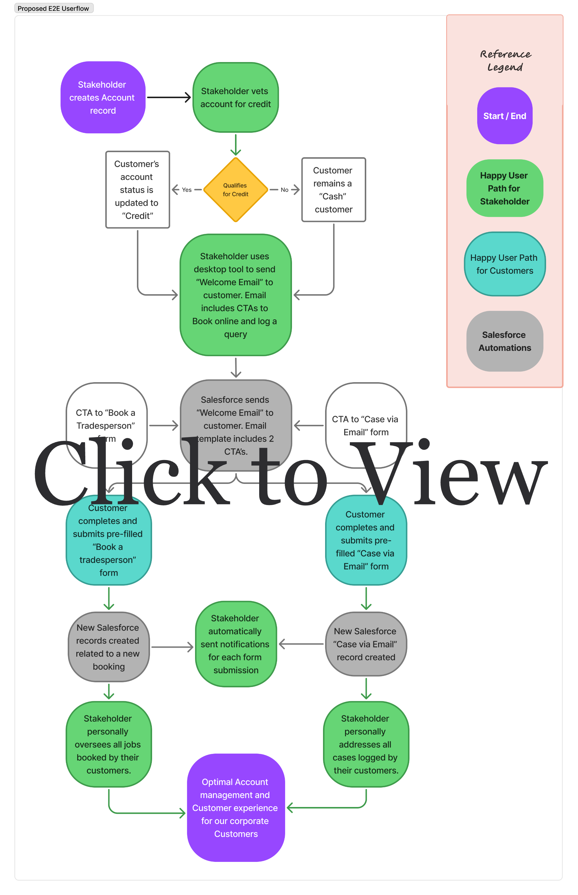
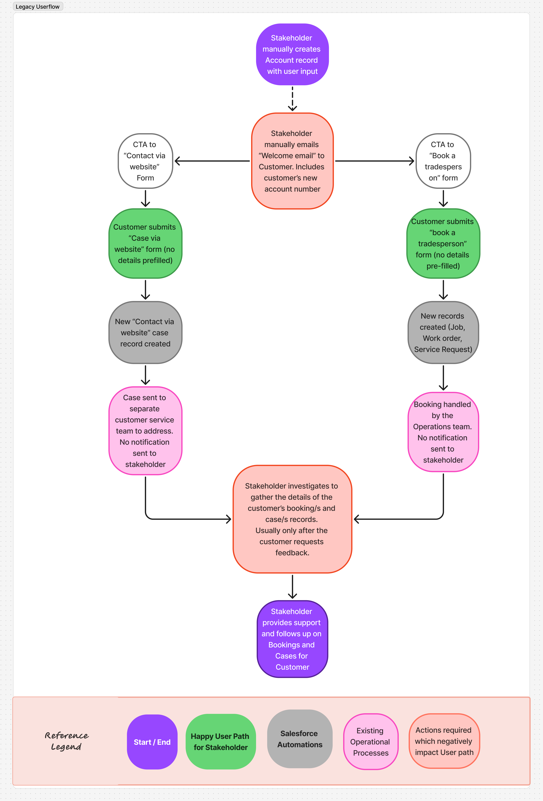

Client Onboarding
Optimised the onboarding process for commercial clients
At a Glance
🛠️ My Role
Digital Product Designer
Product Design and ownership, UX/UI, Workflow logic, Email template design and Zapier integration
🎯 Project Goal
To streamline and partially automate the manual B2B onboarding process, owned by our stakeholders (account management team), through a Salesforce-integrated solution. This involved improving internal workflows and creating a more seamless, consistent experience for prospective clients.
🏢 Business Value
- Brought the stakeholder's onboarding process into Salesforce, giving teams visibility and control over customer history, cases, and bookings
- Delivered a scalable onboarding solution for our stakeholders and future account managers
- Accelerated B2B client conversion by simplifying onboarding and engagement
👤 User Value
- Empowered customers to book jobs or log queries instantly via prefilled form links in their welcome email
- Gained a one-click "Send Welcome Email" feature to onboard clients efficiently
- Received instant alerts when clients submitted query and booking forms, empowering them to provide a personalised customer experience
Deliverable Features
A set of integrated tools and features built within Salesforce to support the B2B onboarding process. These included personalised welcome emails, pre-filled customer forms, automated case creation, and account management tools tailored to the needs of the key stakeholder.
Contact via Email Form
A pre-filled customer-facing form allowing clients to log queries, with submissions linked directly to their account in Salesforce.
New Case Type: "Case via Email"
A custom case type built to support non-job-related queries, with automated customer confirmation emails and stakeholder notifications.

"Onboarding" Feature
A custom Salesforce field used to categorise and manage all accounts handled by the stakeholder team, with filtering across Jobs and Cases.
Online Booking Form (Pre-filled)
A custom booking form pre-filled with each customer's personal details pulled directly from their Salesforce account, simplifying the booking process and reducing friction.
Desktop Feature: "Send Welcome Email"
A Salesforce interface tool enabling the team to trigger a prefilled onboarding email in one click, streamlining communication.
Case Confirmation Email (Automated)
Updated an existing case confirmation template and ensured it was triggered for the new "Case via email" type. Customers received an immediate confirmation after logging a query, while the team were notified to follow up directly with their clients.
Proposed End-to-End User Flow
This diagram maps out the ideal onboarding journey for both stakeholders and their customers. It shows how automation and personalised touchpoints support a faster, more efficient experience for everyone involved.
Background
Key Pain Points
- Manual onboarding via email was time-consuming and prone to human error
- Customer-submitted data wasn't linked to Salesforce, creating extra admin for the stakeholder
- Customers had no clear way to book jobs or log queries before a Job record existed
- Contact forms weren't tied to customer accounts, limiting traceability and context
- No structured way to engage or support clients before job creation
- Stakeholders couldn't easily view or manage the accounts under their ownership
- Slow response times and inconsistent service due to disconnected tools and manual steps
Approach
I took ownership of this project from initial discovery through to deployment. After an in-depth requirements session with the key stakeholder (business accounts manager), I broke the scope into two focused phases: Client Onboarding and Credit Account Application.
I planned the end-to-end experience, designed the workflows, created documentation for cross-team alignment, and collaborated with developers and our systems architect to ensure feasibility within Salesforce. I personally set up and maintained all Zapier integrations to support automation across both staging and production environments.
User Research
To kick off the project, I held a requirements-gathering session with the key stakeholder to understand the current onboarding process, its limitations, and his vision for improvement. The stakeholder described the full flow of reaching out to potential clients, sharing forms via email, manually extracting data, and creating accounts in Salesforce. This insight helped identify opportunities for automation, better structure, and integration.
I consulted with the systems architect and lead Salesforce developers to understand the technical constraints and possibilities within our infrastructure. This helped shape realistic workflows, informed the form and field structure in Salesforce, and ensured seamless backend automation through Zapier.
Proposed Solution
My proposed solution focused on creating an onboarding workflow fully integrated with Salesforce. This included a one-click welcome email feature, personalised form links with customer pre-fill logic, a new case type for early-stage queries, and Zapier-based form automation. These tools enabled the stakeholder to onboard and manage clients efficiently.
Each part of the solution was designed around a clear user journey: the key stakeholder could create a customer record, send a welcome email with custom links, and monitor form submissions through Salesforce. Customers, in turn, received an email that gave them immediate access to prefilled booking and contact forms, removing friction and improving engagement from the very first interaction.
Development
🛠️ Build
During development, I took full ownership of the end-to-end build, ensuring all features were implemented according to the project vision and design.
This included:
- Designing and developing all email templates used in the onboarding flow
- Creating a new "Contact via Email" form with fields mapped to Salesforce account data
- Setting up and configuring the Zapier integration for the "Contact via Email" form in both staging and production environments
- Overseeing the implementation of all features, user flows, and processes to ensure alignment with the intended experience
✅ Testing
To ensure everything functioned smoothly, I tested each feature as it was developed.
This involved:
- Verifying that all email templates were triggered correctly and rendered as expected on both mobile and desktop devices
- Testing the Zapier integration to confirm case creation, correct field mapping, and assignment of the "Case via Email" type
- Manually testing user flows to ensure they performed reliably from onboarding through to customer submission and stakeholder notification
Post Deployment
After deployment, I focused on sharing the work, aligning on next steps, and supporting internal visibility.
This included:
- Hosting a walkthrough session with the stakeholder to demonstrate the new features and discuss the upcoming second phase of the project
- Creating internal release notes summarising all new features, the "Contact via Email" form, and updates to existing systems and workflows
- Coordinating a company-wide release email to showcase the new functionality and ensure teams were aware of the changes and how they impacted day-to-day processes
Takeaways
Lessons Learnt
⚖️ Knowing When to Delegate
Managing the form and Zapier setup myself was time-consuming. I learnt how much earlier involvement from developers can free up space to focus on product logic and strategy. That's now a priority during scoping.
🧰 Building with What Already Works
Reusing existing form structures and templates sped up development and reinforced consistency. I learnt that adapting familiar systems not only saves time but makes documentation and handovers smoother.
📢 Keeping Everyone Aligned
I learnt how important it is to maintain regular alignment with stakeholders across the full delivery cycle. Sharing progress at key stages, from wireframes to prototypes to post-launch demos, supports visibility and adoption.
I adopted internal release notes to clearly document new products, features, and process updates. This helped technical teams manage changes and stay aligned, especially when tracking updates in Salesforce.
🧭 Break Projects into Focused Phases
Manage scope early and be strategic about which features to prioritise. By narrowing the focus, I delivered a minimal viable package of products, features, and adjustments with confidence.
I discovered the value of identifying all internal stakeholders upfront, including non-technical teams who might impact or be impacted by the project's success.
Next Steps
With the "Client onboarding" phase successfully delivered, the project is ready to move into its second phase: Credit Account Application. The following next steps will ensure a smooth transition and effective implementation across teams:
🚀 Begin Phase Two Development
- Initiate the build of the Credit Account Application flow using the prepared design documentation and form prototype
- Finalise updates to the Gravity Forms template based on integration needs and prefill structure
🧩 Expand Salesforce Integration
- Add new fields to the Account object to support data mapping from the credit form
- Design a new Zapier integration to update existing account records using form submissions
- Ensure seamless handoff of form data from Gravity Forms to Salesforce, preserving automation and traceability
🤝 Facilitate Cross-Team Collaboration
- Align with Marketing to establish shared access to the Gravity Forms staging environment
- Promote a version-controlled approach to form editing across both Marketing and Product teams, preserving stability and avoiding conflicts in production
🧠 Prepare for Internal Adoption
- Conduct stakeholder walkthroughs with lead developers to align on the development timeline and solution architecture
- Draft training guides and internal release notes tailored to stakeholder teams (customer service, sales, marketing)
📣 Rollout & Feedback
- Organise a project showcase meeting to present all Credit Account Application features to internal stakeholders including the key stakeholder (business account manager), marketing, and the CTO
- Collect feedback post-launch to monitor adoption, identify issues, and guide future iterations or enhancements